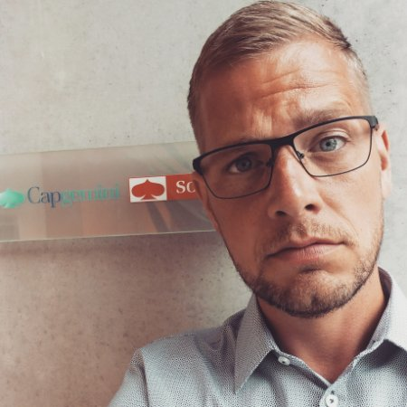
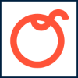
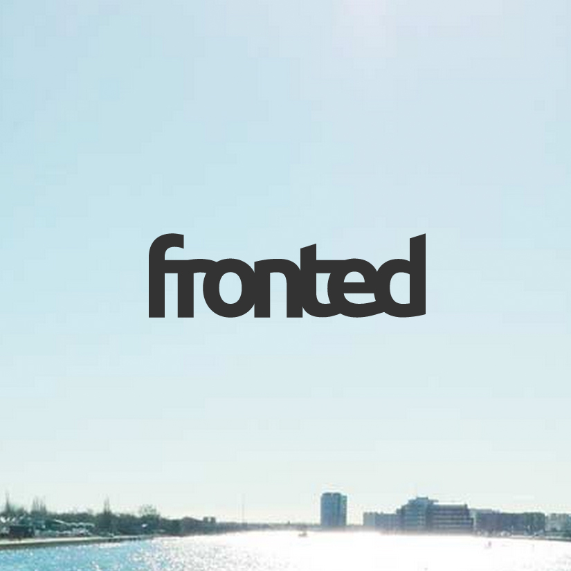
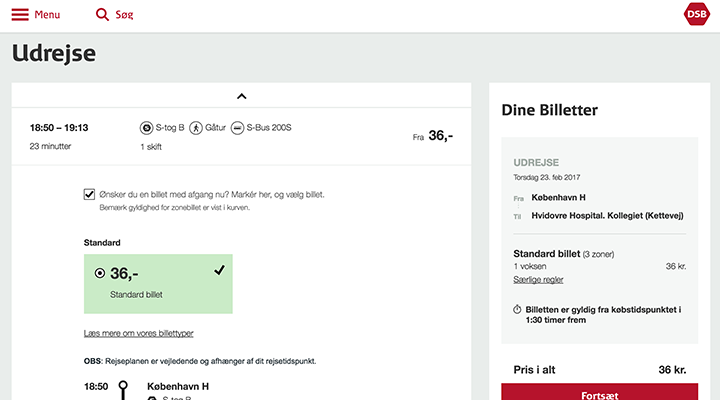
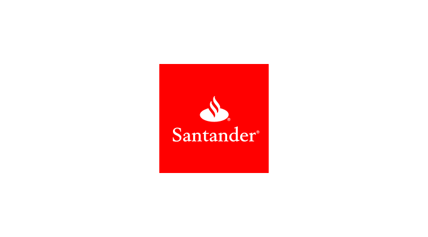
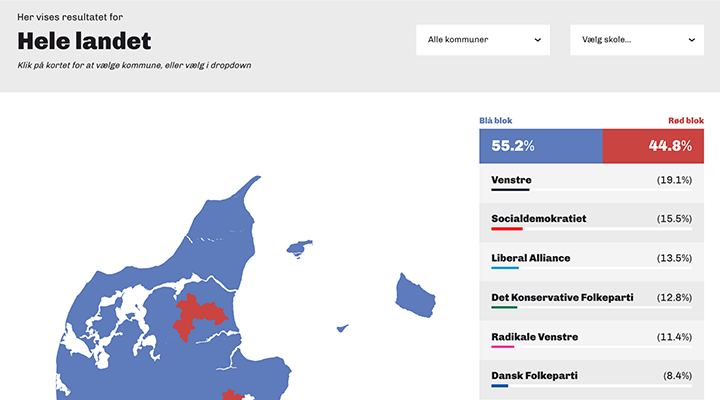
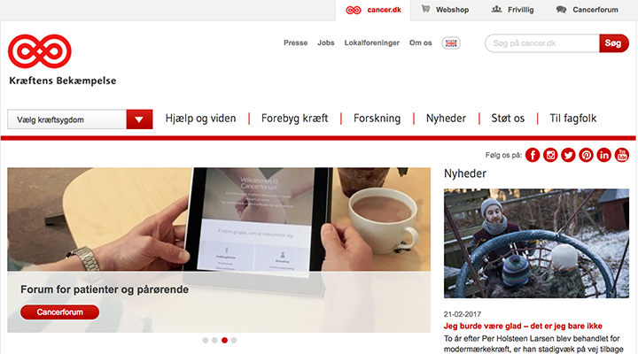
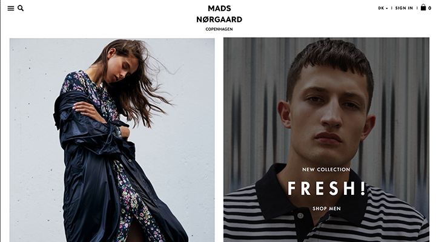

<!DOCTYPE html><html lang="en"></html><head><meta charset="UTF-8"/><meta name="viewport" content="width=device-width, initial-scale=1.0"/><title>CV for Kasper W. Filstrup</title><link rel="stylesheet" href="assets/normalize.css"/><link rel="stylesheet" href="assets/style.css"/></head><body><main><section class="person card"><div class="profile-image  image--square  image--round" style="background-image: url(images/profile.jpg);"></div><h1 class="person__name">Kasper W. Filstrup</h1><h2 class="person__title">Senior Frontend Developer Consultant at Capgemini Sogeti Danmark A/S</h2><h3 class="person__subtitle">Frontend developer with focus on performance and maintainability.</h3></section><blockquote class="card"><p>With a natural interest in frontend technologies - and an eager to learn attitude - I strive to deliver innovative and complex solutions as simple and easy to use as possible.</p><p>With eyes on the ball and with great respect for business decisions and goals, shipping great code with excellent performance is a personal virtue.</p></blockquote><h2 class="out">Career</h2><section class="card experience"><ul class="jobs"><li class="job"><div class="job__logo"></div><div class="job__content"><h4 class="job__title">Senior Frontend Developer Consultant</h4><p class="job__company">Capgemini Sogeti Danmark A/S</p><p class="job__period">09-2016 - current</p></div></li><li class="job"><div class="job__logo"></div><div class="job__content"><h4 class="job__title">Frontend Developer</h4><p class="job__company">TOP-TOY A/S</p><p class="job__period">03-2015 - 07-2016</p></div></li><li class="job"><div class="job__logo"></div><div class="job__content"><h4 class="job__title">Frontend Developer</h4><p class="job__company">Konform A/S</p><p class="job__period">01-2013 - 02-2015</p></div></li><li class="job"><div class="job__logo"></div><div class="job__content"><h4 class="job__title">Developer &amp; Co-founder/Partner</h4><p class="job__company">Orango ApS</p><p class="job__period">01-2009 - 12-2012</p></div></li><li class="job"><div class="job__logo"></div><div class="job__content"><h4 class="job__title">Developer</h4><p class="job__company">DanaWeb A/S</p><p class="job__period">08-2004 - 12-2008</p></div></li><li class="job"><div class="job__logo"></div><div class="job__content"><h4 class="job__title">Freelance Frontend Developer</h4><p class="job__company">Fronted</p><p class="job__period">03-2015 - current</p></div></li></ul></section><h2 class="out">Selected projects</h2><section class="projects"><section class="project-float"><section class="card project"><div class="card__image"></div><h4 class="project__company">DSB.dk</h4><p class="project__description">Frontend development of DSB's online ticket sales to support the new unified national zoning system launching in January 2017.</p><p class="project__tech">Technologies used: React.js, Reflux, Less, Gulp</p><p class="project__period">09-2016 - 01-2017</p></section></section><section class="project-float"><section class="card project"><div class="card__image"></div><h4 class="project__company">Santander Consumer Banking Denmark</h4><p class="project__description">Complete frontend for application flow of car loans.</p><p class="project__tech">Technologies used: Vue.js, SCSS, Webpack</p><p class="project__period">02-2017 - current</p></section></section><section class="project-float"><section class="card project"><div class="card__image"></div><h4 class="project__company">Toys&quot;R&quot;Us &amp; BR Legetøj</h4><p class="project__description">Maintaining legacy frontend code and adding new omni channel features.</p><p class="project__tech">Technologies used: Less, AngularJS, Grunt</p><p class="project__period">08-2015 - 08-2016</p></section></section><section class="project-float"><section class="card project"><div class="card__image"></div><h4 class="project__company">Scraperiño</h4><p class="project__description">Cloud based and clustered surveillance SaaS to gain a competitive edge over close competitors</p><p class="project__tech">Technologies used: NodeJS, Google Cloud SQL, Digital Ocean droplets, React.js, Reflux, MaterializeCSS, Websockets</p></section></section><section class="project-float"><section class="card project"><div class="card__image"></div><h4 class="project__company">Skolevalg</h4><p class="project__description">Complete frontend development, component system and interactive &quot;poster-builder&quot; application, with ImageMagick CLI and an AngularJS frontend</p><p class="project__tech">Technologies used: ImageMagick, AngularJS, SCSS, PHP, GruntJS, jQuery, Bourbon + Neat</p><p class="project__period">08-2014 - 01-2015</p></section></section><section class="project-float"><section class="card project"><div class="card__image"></div><h4 class="project__company">Kræftens Bekæmpelse</h4><p class="project__description">Frontend for desktop site as well as separate mobile site + async navigation pattern</p><p class="project__tech">Technologies used: Less, PHP, GruntJS, jQuery, BootstrapCSS</p><p class="project__period">01-2013 - 02-2014</p></section></section><section class="project-float"><section class="card project"><div class="card__image"></div><h4 class="project__company">Mads Nørgaard</h4><p class="project__description">Complete frontend development</p><p class="project__tech">Technologies used: SCSS, PHP, GruntJS, jQuery, Bourbon + Neat</p><p class="project__period">2013 - 2014</p></section></section></section><h2 class="out">Life</h2><blockquote class="card"><p>Married to Julie - son named Balder.<br>Hobbies are few, but family, TV series, delicious food, tasty red wine and great company keeps me above water.</p><p><em>Born:&nbsp;October 27th 1982</em></p></blockquote></main><footer><p>Ulstrupvej 7&nbsp;&middot;&nbsp;2650 Hvidovre&nbsp;&middot;&nbsp;<a href="tel:+4553770475">+45 53 770 475</a>&nbsp;&middot;&nbsp;<a href="mailto:kasper@475.dk">kasper@475.dk</a></p><ul class="social"><li><a href="https://www.linkedin.com/in/kasperwf">linkedin.com/in/kasperwf</a></li><li><a href="https://twitter.com/kasperwf">twitter.com/kasperwf</a></li></ul></footer></body>